System Identification#
Introduction to System#
In the beginning, the topic of system identification is introduced. As mentioned earlier, a system is represented as follows:
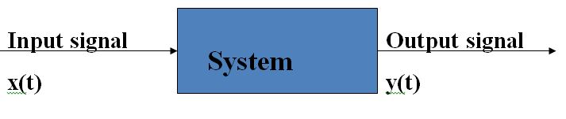
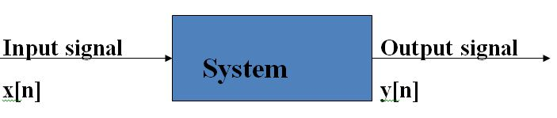
A system is a process that transforms one or more inputs into one or more outputs.
Humans spend their entire lives learning to identify systems. In other words, throughout life, humans are constantly identifying systems.
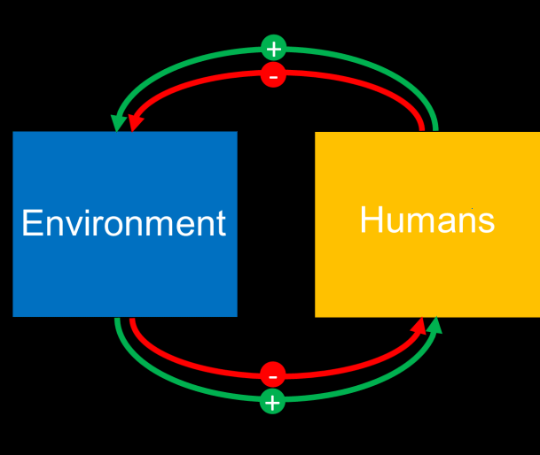
For example, when we become friends with someone, through actions and reactions, we are in the process of identifying them.
We do the same thing in the field of signal and system analysis by applying inputs and observing outputs in an attempt to identify the system. Therefore, the reality is that in order to fully identify a system, various signals must be applied and the resulting outputs analyzed. However, we will demonstrate that it is possible to identify a system by applying just one input and measuring its corresponding output.
To achieve this, we need a specific theoretical input, and we will attempt to introduce this special input.
The introduction of a special signal, which theoretically allows system identification with just one response, is proven as follows:
Impulse Signal#
An impulse signal is a fundamental concept in signal processing and systems theory. It is often represented by the Dirac delta function, \( \delta(t) \), which is not a conventional function but rather a distribution or generalized function. The Dirac delta function has two key properties:
\( \delta(t) = 0 \) for all \( t \neq 0 \).
\( \int_{-\infty}^{\infty} \delta(t) \, dt = 1 \).
However, since the Dirac delta function is not a real function in the traditional sense, we approximate it using more practical definitions that resemble it when \( \Delta \) becomes very small.
Definition 1: Approximating the Impulse as a Narrow Pulse#
In the first definition, \( \delta_\Delta(t) \) represents a pulse of width \( \Delta \) and height \( \frac{1}{\Delta} \). The idea behind this approximation is to create a narrow pulse that maintains the area of 1, similar to the Dirac delta function. Mathematically, we express this as:
As \( \Delta \to 0 \), this pulse becomes infinitely narrow and infinitely tall, approaching the behavior of the ideal Dirac delta function. The area under this pulse is:
which satisfies the condition of the delta function, maintaining an area of 1.
Graphical Representation#
In following Figure, this pulse is typically illustrated as a rectangle with height \( \frac{1}{\Delta} \) and width \( \Delta \). As \( \Delta \) decreases, the rectangle becomes narrower and taller, representing the ideal impulse signal in the limit.
This definition helps in understanding and approximating the impulse signal in practical scenarios where we work with signals that are not purely theoretical but can be closely approximated.
import numpy as np
import matplotlib.pyplot as plt
# Define delta function approximation parameters
def delta_approx(t, delta):
# Height is 1/delta and width is delta
return np.where(np.abs(t) <= delta / 2, 1 / delta, 0)
# Time axis and delta value
t = np.linspace(-1, 1, 1000)
delta = 0.2 # width of the narrow pulse
# Plot delta function approximation
plt.figure(figsize=(8, 4))
plt.plot(t, delta_approx(t, delta), label=f'Delta Approximation (Δ = {delta})', color='b')
plt.title(f'Impulse Signal Approximation with Δ = {delta}')
plt.xlabel('Time (t)')
plt.ylabel(r'$\delta_\Delta(t)$')
plt.legend()
plt.grid(True)
plt.show()
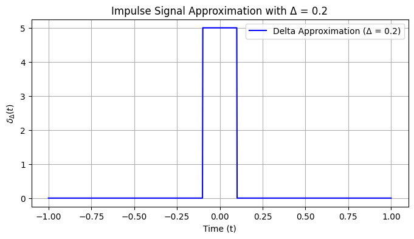
Gaussian Type of \( \delta_\Delta(t) \)#
Another common definition of the impulse signal \( \delta_\Delta(t) \) is based on a Gaussian function. In this definition, we approximate the Dirac delta function using a Gaussian function that becomes narrower and taller as \( \Delta \) decreases. The Gaussian approximation has the following form:
Key Points of the Gaussian Approximation:#
The Gaussian function is symmetric around \( t = 0 \) and has a bell-shaped curve.
As \( \Delta \to 0 \), the Gaussian becomes increasingly narrow and tall, and its area remains 1, just like the Dirac delta function.
The parameter \( \Delta \) controls the width of the Gaussian. Smaller \( \Delta \) values yield a more accurate approximation of the impulse.
Properties:#
Height: The peak height is \( \frac{1}{\sqrt{2\pi\Delta^2}} \), and it increases as \( \Delta \) decreases.
Area: The total area under the Gaussian curve is 1, ensuring that it approximates the Dirac delta function.
import sympy as sp
import numpy as np
import matplotlib.pyplot as plt
# Define the symbolic variable and Gaussian approximation of the Dirac delta
t = sp.symbols('t')
Delta = 0.2 # width parameter
# Gaussian definition of delta function approximation
gaussian_approx = (1 / sp.sqrt(2 * sp.pi * Delta**2)) * sp.exp(-t**2 / (2 * Delta**2))
# Convert to a numerical function for plotting
gaussian_func = sp.lambdify(t, gaussian_approx, 'numpy')
# Time range for plotting
t_values = np.linspace(-1, 1, 1000)
# Plot Gaussian approximation
plt.figure(figsize=(8, 4))
plt.plot(t_values, gaussian_func(t_values), label=f'Gaussian Approximation (Δ = {Delta})', color='b')
# Title and labels
plt.title(f'Gaussian Approximation of Impulse Signal with Δ = {Delta}')
plt.xlabel('Time (t)')
plt.ylabel(r'$\delta_\Delta(t)$')
plt.legend()
plt.grid(True)
plt.show()
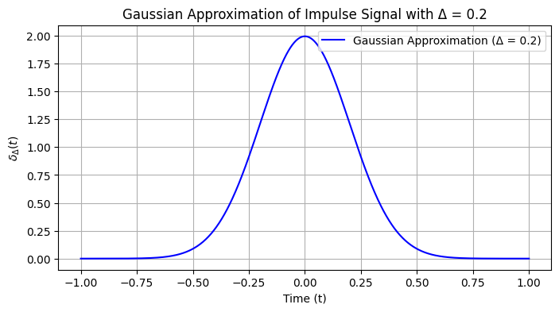
Rectangular approximation one-side#
For the rectangular approximation of the impulse signal, we can define it as a pulse that starts at \( t = 0 \) and extends to \( t = \Delta \) with a height of \( \frac{1}{\Delta} \), ensuring that the area under the pulse is 1.
The rectangular pulse is defined as:
Key Points:#
The height is \( \frac{1}{\Delta} \) to ensure the area is 1.
The width of the rectangle is from \( t = 0 \) to \( t = \Delta \).
import numpy as np
import matplotlib.pyplot as plt
# Define delta values for different widths
deltas = [0.2, 0.5, 1.0]
# Define the time axis
t_values = np.linspace(-1, 2, 1000)
# Functions for Gaussian, Triangular, and Rectangular approximations
def gaussian_approx(t, delta):
return (1 / np.sqrt(2 * np.pi * delta**2)) * np.exp(-t**2 / (2 * delta**2))
def triangular_approx(t, delta):
return np.where(np.abs(t) <= delta / 2, (2 / delta) * (1 - 2 * np.abs(t) / delta), 0)
def rectangular_approx(t, delta):
return np.where((t >= 0) & (t <= delta), 1 / delta, 0)
# Figure 1: Rectangular pulse approximation with increasing delta
plt.figure(figsize=(8, 5))
for delta in deltas:
rectangular_values = rectangular_approx(t_values, delta)
plt.plot(t_values, rectangular_values, label=f'Rectangular (Δ = {delta})')
plt.title('Rectangular Pulse Approximation with Different Δ')
plt.xlabel('Time (t)')
plt.ylabel(r'$\delta_\Delta(t)$')
plt.legend()
plt.grid(True)
plt.show()
# Figure 2: Gaussian pulse approximation with increasing delta (sigma)
plt.figure(figsize=(8, 5))
for delta in deltas:
gaussian_values = gaussian_approx(t_values, delta)
plt.plot(t_values, gaussian_values, label=f'Gaussian (Δ = {delta})')
plt.title('Gaussian Pulse Approximation with Different Δ (Sigma)')
plt.xlabel('Time (t)')
plt.ylabel(r'$\delta_\Delta(t)$')
plt.legend()
plt.grid(True)
plt.show()
# Figure 3: Triangular pulse approximation with increasing delta
plt.figure(figsize=(8, 5))
for delta in deltas:
triangular_values = triangular_approx(t_values, delta)
plt.plot(t_values, triangular_values, label=f'Triangular (Δ = {delta})')
plt.title('Triangular Pulse Approximation with Different Δ')
plt.xlabel('Time (t)')
plt.ylabel(r'$\delta_\Delta(t)$')
plt.legend()
plt.grid(True)
plt.show()
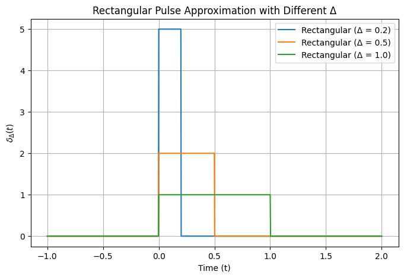
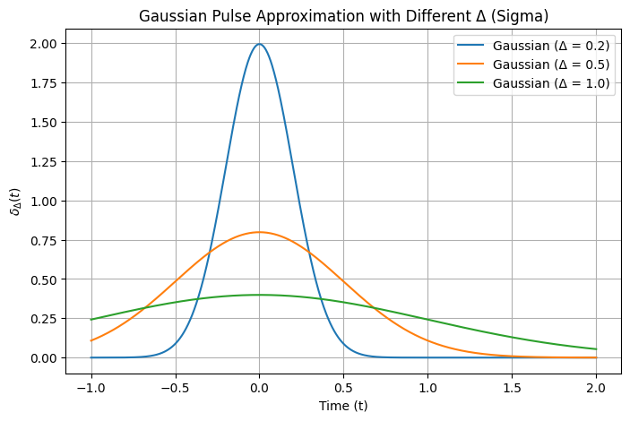
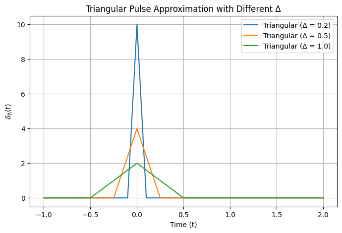
Sinc Function#
Definition: $\( \text{sinc}(x) = \begin{cases} \frac{\sin(\pi x)}{\pi x} & \text{if } x \neq 0 \\ 1 & \text{if } x = 0 \end{cases} \)$
Connection to the Dirac Delta Function#
The sinc function plays a crucial role in the context of signal processing and Fourier analysis, particularly in the following ways:
Fourier Transform: The Fourier transform of the rectangular function (or boxcar function) is a sinc function. This property is significant in understanding how different frequency components are represented in signals.
Sampling and Reconstruction: In the theory of sampling, the sinc function arises in the context of reconstructing a continuous signal from its samples. The ideal reconstruction formula involves convolution with the sinc function: $\( f(t) = \sum_{n=-\infty}^{\infty} f(nT) \cdot \text{sinc}\left(\frac{t - nT}{T}\right) \)\( where \)T$ is the sampling period.
Approximation of the Dirac Delta Function: The sinc function can be used to approximate the Dirac delta function in the limit. As the width of a rectangular pulse approaches zero, the sinc function serves as an idealized representation of an impulse: $\( \delta(t) \approx \lim_{\epsilon \to 0} \frac{1}{\epsilon} \text{sinc}\left(\frac{t}{\epsilon}\right) \)$ This approximation emphasizes the role of the sinc function in signal representation.
import numpy as np
import matplotlib.pyplot as plt
# Define the sinc function
def sinc(x, epsilon):
return (1/epsilon) * np.sinc(x / epsilon)
# Define epsilon values
epsilon_values = [0.9, 0.6, 0.4]
x = np.linspace(-1, 1, 1000)
# Create the plot
plt.figure(figsize=(12, 6))
for epsilon in epsilon_values:
y = sinc(x, epsilon)
plt.plot(x, y, label=f'ε = {epsilon}')
# Add labels and title
plt.title('Sinc Function Approximating Dirac Delta Function')
plt.xlabel('x')
plt.ylabel('sinc(x/ε)')
plt.ylim(-0.5, 3)
plt.axhline(0, color='black', lw=0.5, ls='--')
plt.axvline(0, color='black', lw=0.5, ls='--')
plt.grid()
plt.legend()
plt.show()
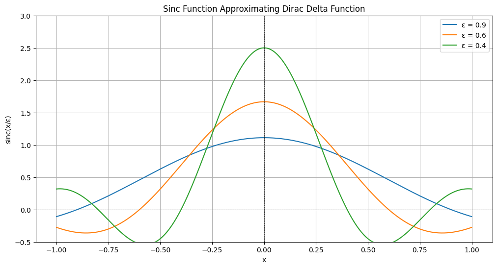
Common operations on signals#
Time Shift:#
The original input signal is denoted as \(x(t)\), while \(x(t - \tau)\) represents the time-shifted version of this signal. This indicates that the argument has changed, but the signal \(x\) itself remains unchanged (the occurrence time has shifted, but \(x\) is still the same as before).
For instance, when we shout towards a mountain, the signal \(x(t)\) travels toward the mountain, and a time-shifted signal \(x(t - \tau)\) returns to us, albeit somewhat degraded.
Another example is a sound we record as \(x(t)\) and then play back the next day. The sound we hear during playback is \(x(t - \tau)\), where \(\tau\) is equal to one day.
Example:
In this example, we have the signal \(x(t)\) illustrated in Figure 14. We want to compute the signal \(x(t - 3)\). To accomplish this, we will evaluate \(t - 3\) at several specific points, which we will select as inflection points—those points where changes in the signal occur (specifically at points -1, 0, and 1).
Time Scaling#
Description: Time scaling alters the speed of the signal. A scaling factor greater than 1 compresses the signal, while a factor between 0 and 1 stretches it.
Mathematical Representation: If \(x(t)\) is the original signal, a time-scaled signal can be represented as: $\( x(at) \)\( where \)a$ is the scaling factor.
Amplitude Scaling#
Description: Amplitude scaling changes the height (amplitude) of the signal. This is often used to amplify or attenuate the signal.
Mathematical Representation: If \(x(t)\) is the original signal, the amplitude-scaled signal can be represented as: $\( k \cdot x(t) \)\( where \)k$ is the scaling factor (amplitude).
Time Reflection#
Description: Time reflection flips the signal around the vertical axis, similar to inversion but with respect to time.
Mathematical Representation: If \(x(t)\) is the original signal, the time-reflected signal can be represented as: $\( x(-t) \)$
Convolution#
Description: Convolution combines two signals to produce a third signal, representing how the shape of one signal is modified by another. This operation is fundamental in signal processing, especially for filtering.
Mathematical Representation: If \(x(t)\) and \(h(t)\) are two signals, their convolution is given by: $\( y(t) = x(t) * h(t) = \int_{-\infty}^{\infty} x(\tau) h(t - \tau) \, d\tau \)$
Correlation#
Description: Correlation measures the similarity between two signals as a function of the time-lag applied to one of them. This is useful for signal detection.
Mathematical Representation: If \(x(t)\) and \(y(t)\) are two signals, their correlation is defined as: $\( R_{xy}(\tau) = \int_{-\infty}^{\infty} x(t) y(t + \tau) \, dt \)$
Time shift example code#
import numpy as np
import matplotlib.pyplot as plt
# Parameters
fs = 100 # Sampling frequency
t = np.linspace(0, 1, fs) # Time vector (1 second)
frequency = 5 # Frequency of the sinusoidal signal
tau = (1/frequency)/4 # Time shift (in seconds)
# Original signal: a sinusoidal wave
x_t = np.sin(2 * np.pi * frequency * t)
# Time-shifted signal
x_t_shifted = np.sin(2 * np.pi * frequency * (t - tau))
# Create the plot
plt.figure(figsize=(10, 6))
plt.plot(t, x_t, label='Original Signal $x(t)$', color='blue')
plt.plot(t, x_t_shifted, label='Time-Shifted Signal $x(t - \\tau)$', color='orange', linestyle='--')
plt.axvline(x=tau, color='gray', linestyle=':', label=f'Time Shift ($\\tau$) = {tau}s')
# Adding labels and title
plt.title('Time Shift of a Signal')
plt.xlabel('Time (seconds)')
plt.ylabel('Amplitude')
plt.legend()
plt.grid()
plt.xlim(0, 1)
plt.ylim(-1.5, 1.5)
# Show the plot
plt.show()
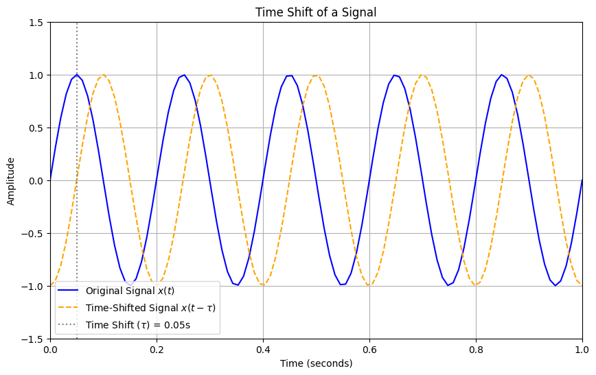
Time Scaling example code#
import numpy as np
import matplotlib.pyplot as plt
# Parameters
fs = 100 # Sampling frequency
t = np.linspace(0, 1, fs) # Time vector (1 second)
frequency = 5 # Frequency of the sinusoidal signal
scaling_factor = 2 # Time scaling factor
# Original signal: a sinusoidal wave
x_t = np.sin(2 * np.pi * frequency * t)
# Time-scaled signal
# Scaling the time: if scaling_factor > 1, the signal compresses
# if scaling_factor < 1, the signal stretches
t_scaled = t / scaling_factor
x_t_scaled = np.sin(2 * np.pi * frequency * t_scaled)
# Create the plot
plt.figure(figsize=(10, 6))
plt.plot(t, x_t, label='Original Signal $x(t)$', color='blue')
plt.plot(t, x_t_scaled, label=f'Time-Scaled Signal $x(t / {scaling_factor})$', color='orange', linestyle='--')
plt.axvline(x=1/scaling_factor, color='gray', linestyle=':', label=f'Time Scale ($\\text{{Factor}}$) = {scaling_factor}')
# Adding labels and title
plt.title('Time Scaling of a Signal')
plt.xlabel('Time (seconds)')
plt.ylabel('Amplitude')
plt.legend()
plt.grid()
plt.xlim(0, 1)
plt.ylim(-1.5, 1.5)
# Show the plot
plt.show()
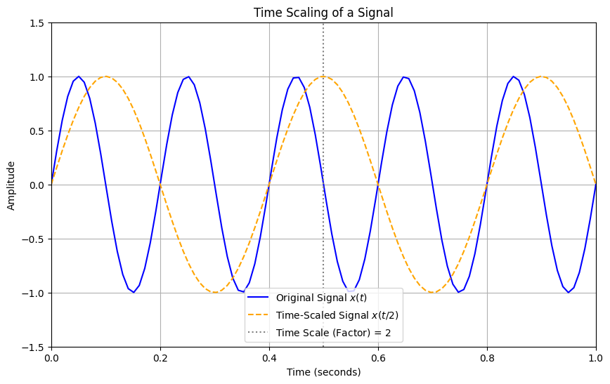
Time Reflection example code#
import numpy as np
import matplotlib.pyplot as plt
# Parameters
fs = 100 # Sampling frequency
t = np.linspace(0, 1, fs) # Time vector (1 second)
frequency = 5 # Frequency of the sinusoidal signal
# Original signal: a sinusoidal wave
x_t = np.sin(2 * np.pi * frequency * t)
# Time-reflected signal: create a time vector from 0 to -1 second
t_reflected = np.linspace(0, -1, fs) # Time vector from 0 to -1 second
x_t_reflected = np.sin(2 * np.pi * frequency *(-t_reflected))
# Create the plot
plt.figure(figsize=(10, 6))
plt.plot(t, x_t, label='Original Signal $x(t)$', color='blue')
plt.plot(t_reflected, x_t_reflected, label='Time-Reflected Signal $x(-t)$', color='orange', linestyle='--')
# Adding labels and title
plt.title('Time Reflection of a Signal')
plt.xlabel('Time (seconds)')
plt.ylabel('Amplitude')
plt.axvline(x=0, color='gray', linestyle=':', label='Time Reflection Axis')
plt.legend()
plt.grid()
plt.xlim(-1, 1)
plt.ylim(-1.5, 1.5)
# Show the plot
plt.show()
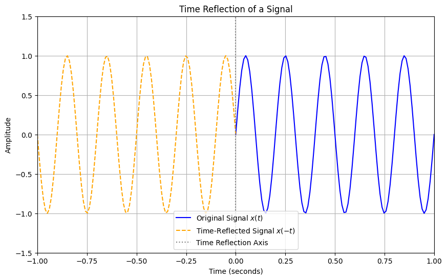
Convolution#
1-D convolution is a mathematical operation widely used in fields such as signal processing, image processing, and deep learning. It combines two functions to produce a third function, illustrating how the shape of one function is modified by the other. The convolution of two functions \( f(t) \) and \( g(t) \) is defined as follows:
Definition#
Given two functions \( f(t) \) and \( g(t) \), the convolution \( (f * g)(t) \) is defined by the integral:
Explanation#
Functions:
\( f(t) \): The input function (signal).
\( g(t) \): The filter (or kernel) function.
Variable Change:
The variable \( \tau \) serves as a dummy variable for integration.
Time Reversal:
The term \( g(t - \tau) \) represents the filter function \( g(t) \) flipped and shifted by \( t \).
Integration:
The integral computes the area under the product of \( f(\tau) \) and \( g(t - \tau) \) across all possible values of \( \tau \).
Discrete 1-D Convolution#
For discrete sequences \( f[n] \) and \( g[n] \), the convolution is defined as:
Key Properties#
Commutative: $\( f * g = g * f \)$
Associative: $\( f * (g * h) = (f * g) * h \)$
Distributive: $\( f * (g + h) = (f * g) + (f * h) \)$
Identity Element: The identity element for convolution is the Dirac delta function \( \delta(t) \), such that: $\( f * \delta = f \)$
Applications#
Signal Processing: Filtering signals and detecting features.
Image Processing: Applying filters and kernels for blurring, sharpening, etc.
Deep Learning: Convolutional neural networks (CNNs) use convolution to process data with a grid-like topology, such as images.
Example of 1-D Convolution#
Consider the following example:
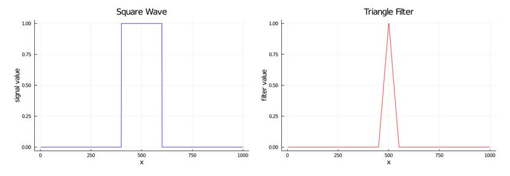
The accompanying video demonstrates the operation of 1-D convolution:
.. video:: ../SAS/ImageSAS/triangle_square_conv.mp4 :width: 640 :height: 480 :controls: true
See more details in Convolutions in 1D
https://www.songho.ca/dsp/convolution/convolution.html#decomposition
https://www.cs.cornell.edu/courses/cs1114/2013sp/sections/S06_convolution.pdf
Comment over Gaussian approximation#
The plot above shows the Gaussian approximation of the impulse signal, where \( \Delta = 0.2 \). The bell-shaped curve becomes narrower and taller as \( \Delta \) decreases, similar to the behavior of the Dirac delta function. This is another effective way to approximate the impulse signal in practice.
Another way to approximate the impulse signal is by using a triangular pulse. This type of approximation creates a symmetric triangle centered at \( t = 0 \), where the base width is controlled by \( \Delta \). The triangular pulse has the following characteristics:
The height is \( \frac{2}{\Delta} \), ensuring that the area under the triangle remains 1.
The base width of the triangle is \( \Delta \), extending from \( -\frac{\Delta}{2} \) to \( \frac{\Delta}{2} \).
The triangular approximation can be defined as:
Key Points:#
The peak of the triangle is at \( t = 0 \) with height \( \frac{2}{\Delta} \).
The function linearly decreases to zero at \( t = \pm \frac{\Delta}{2} \).
Let me write the code using SymPy to visualize this triangular impulse approximation.
It seems like I can’t do more advanced data analysis right now. Please try again later.
If you’d like, I can provide you with the exact SymPy code to try on your local machine. Would you prefer that?
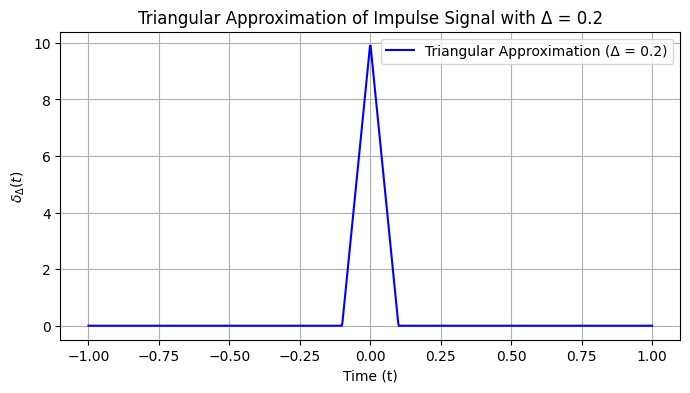